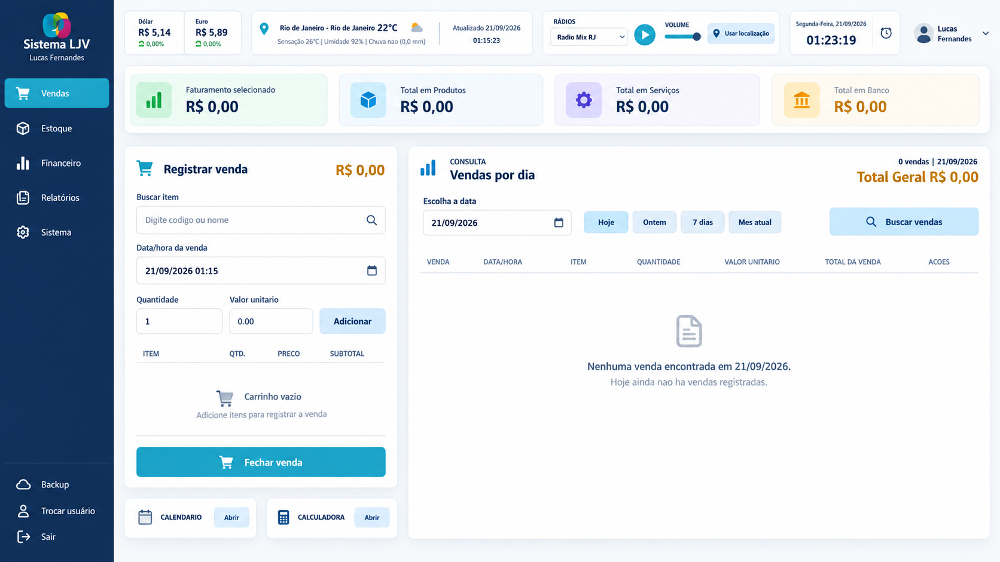

Base técnica sólida
Mais de 15 anos trabalhando com computadores, softwares, suporte e diagnósticos.
Aberto a oportunidades e conexões
Sou Lucas Fernandes, profissional de tecnologia com mais de 15 anos de experiência e desenvolvedor em evolução contínua, focado em criar sistemas organizados, rápidos e úteis para negócios reais.
01 — Sobre mim
Minha trajetória em tecnologia começou com hardware, sistemas, suporte técnico e resolução de problemas. Essa vivência me permite enxergar a tecnologia de forma ampla: do funcionamento físico dos equipamentos à lógica por trás dos sistemas. Atualmente, curso Análise e Desenvolvimento de Sistemas e direciono essa base prática ao desenvolvimento de software.
Mais de 15 anos trabalhando com computadores, softwares, suporte e diagnósticos.
Atualmente, curso o Tecnólogo em Análise e Desenvolvimento de Sistemas pela Estácio e o Técnico em Programador Front-End pelo SENAI. Em paralelo, desenvolvo projetos práticos e aprofundo meus conhecimentos em desenvolvimento de software.
Interesse em sistemas que simplificam operações e resolvem problemas reais.
02 — Projeto em destaque
ERP e PDV serverless para a gestão comercial de pequenas e médias empresas — em produção desde maio de 2026.

O Sistema LJV integra vendas, estoque, financeiro, relatórios analíticos e controle de acessos. Está implantado e em uso real em uma loja, com suporte técnico e melhorias contínuas conduzidas por mim.
Ver repositório do Sistema LJV ↗Unir vendas, estoque, financeiro e gestão operacional em uma experiência coesa.
Aplicação rápida e de baixa manutenção, preparada para a rotina comercial.
Regras críticas no back-end, auditoria, permissões por função e valores monetários em centavos.
Prévia dos principais módulos do Sistema LJV.
Experiências que reforçam diferentes fundamentos de desenvolvimento.
PDV, serviços, estoque e caixa com transações, auditoria, permissões e 45 stored procedures.
Ver no GitHub ↗Projeto local com dupla eliminação, sorteio, chaves e pódio automático.
Ver no GitHub ↗Cadastro, edição, exclusão com confirmação, filtro mensal e totalização de despesas.
Ver no GitHub ↗03 — Tecnologias
Fundamentos de desenvolvimento e ecossistema Spring.
Back-end e APIs em evolução contínua.
Linguagem aplicada em automações e sistemas web.
Framework usado no Pokémon Champions.
Interações e experiências web responsivas.
Frontend e backend do Sistema LJV.
Estrutura semântica para interfaces web.
Design responsivo e acabamento visual.
Aplicações desktop e regras de negócio.
Banco relacional para aplicações modernas.
Procedures, transações, modelagem e consultas.
Persistência local e base do Cloudflare D1.
Versionamento de código e histórico de mudanças.
Repositórios e publicação de projetos.
Workers, D1 e Wrangler no Sistema LJV.
Plataforma de serviços em nuvem.
04 — Formação contínua
30 horas.
Ver diploma ↗ 02 · Estácio30 horas.
Ver diploma ↗ 03 · Estácio170 horas.
Ver diploma ↗ 01 · Curso em Vídeo40 horas.
Ver diploma ↗ 02 · Curso em Vídeo40 horas.
Ver diploma ↗ Hotmart · Emerson Machado16 horas.
Ver diploma ↗ DIO + NTT DATA54 horas.
Ver diploma ↗05 — Contato
Estou disponível para conversar sobre oportunidades, produtos e desafios de tecnologia.